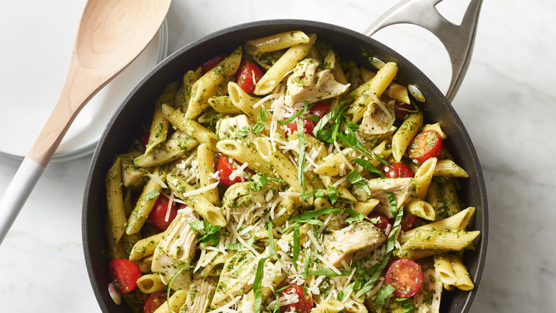

Pesto Pasta Recipe
Ingredients
Pesto
- 1 cup basil leaves
- 1/3 cup parmesan
- 1/4 cup olive oil
- 1 clove garlic
- 2 tablespoons sliced almonds, toasted
Pasta
- 12oz penne pasta
- 3 cups chicken broth
- 2 cups shredded chicken
- 2 cups cherry tomatoes
- 1/4 cup basil leaves
- 3 tablespoons parmesan
Steps
- In blender or food processor, place Pesto ingredients.
- Cover and process on medium speed about 3 minutes,
stopping occasionally to scrape down sides with rubber spatula, until smooth. Set aside.
- In 4-quart saucepan, heat penne and broth just to boiling over high heat. Reduce heat to medium;
cover and cook 8 to 10 minutes, stirring frequently, until al dente and liquid is almost absorbed.
Remove from heat. Add pesto; stir in chicken and tomatoes; cook over medium 2 to 3 minutes or until thoroughly heated.
- Garnish with basil and 3 tablespoons Parmesan cheese.
- Serve